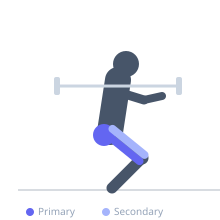
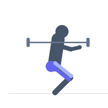

Exercise guide / Reverse Hack Squat Machine
Reverse Hack Squat Machine
The reverse hack squat is performed on a standard hack squat machine with the lifter facing into the pad rather than away from it. This orientation creates a squat pattern similar to a barbell squat but machine-guided, with significantly greater hip hinge component. The chest rests on the shoulder pads and the hips push back during descent, heavily recruiting the glutes and hamstrings in addition to the quadriceps.
Primary muscles
gluteus maximus
biceps femoris long head
semitendinosus
Secondary muscles
rectus femoris
vastus lateralis
vastus medialis
Stabilizers
erector spinae
transverse abdominis
Equipment
Hack Squat Machine


Starting position
- Face into the hack squat machine with your chest against the shoulder pads and feet on the platform. Feet can be placed lower on the platform to accentuate the hip hinge.
Setup
- Load the hack squat machine and face the pads. Position the shoulder pads against your chest and upper torso. Release the safety handles.
Steps
- Step 1: Brace the core and maintain chest contact with the pad throughout.
- Step 2: Bend the knees and push the hips back as you descend, allowing a natural hip hinge.
- Step 3: Descend until the thighs are at least parallel to the platform.
- Step 4: Drive through the entire foot, extending hips and knees together to return to the top.
Coaching cues
- Hips back as you descend
- Drive the hips through at lockout
- Chest stays on the pad
Breathing
- Inhale and brace before descent. Exhale on the ascent.
Range of motion
- Thighs parallel or below. Greater hip flexion than the standard hack squat.
Tempo
- 3-0-1-0
Common mistakes
- Hips rising faster than the torso on the ascent
- Insufficient depth
- Letting chest come off the pad
Safety
- Engage the safety locks before stepping out of position
- The shoulder pads create pressure on the chest — do not load excessively heavy initially
Training
- strength: 5–8 reps
- hypertrophy: 8–15 reps
- strength: 3–4 sets
- hypertrophy: 3–4 sets
- Rest: {'strength': 120, 'hypertrophy': 90}